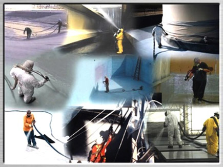
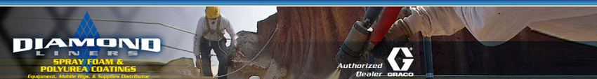
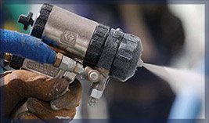

долговечность и экологичность
Уважаемые дамы и господа!
Мы рады приветствовать Вас на страницах нашего сайта!
Данный сайт посвящен инновационным технологиям в области строительства и ремонта, отвечающим главным на сегодняшний день критериям: долговечности и экологичности.
Мы представляем новый продукт в нашем регионе.
Компания
Благодаря накопленному опыту работы в сфере гидроизоляции и теплоизоляции компания
Наша компания осуществляет работы в области гидроизоляции и теплоизоляции с применением современных технологий на объектах в городе Москве и в Московской области.
Шесть причин почему мы?
1. Наша компания занимается поликарбомидными покрытиями с 2008 года, накопив значительный опыт работы;
2. Мы лучше знаем, что значит качественный результат покрытия на долгие годы;
3. Благодаря профессионализму наших сотрудников, партнерству с проверенными поставщиками выполнение работ осуществляется в кратчайшие сроки;
4. Мы ответственно подходим к заказу, используя только зарубежную технологию;
5. С помощью тепловизора «Testo 882» мы легко найдем любую утечку тепла в Вашем доме;
6. На все виды выполненных работ наша компания дает гарантию до ___ лет.
Компания
Полимочевина разработана в 1989 году Texaco Chemical Co. В первые годы после внедрения в практику полимочевина была отнесена к классу полиуретанов и лишь в последние семь лет была выделена в самостоятельный класс покрытий. Уже на протяжении пятнадцати лет, поликарбомидное покрытие используют во всем мире. В России полимочевину уже используют на протяжении пяти лет.
Инженеры, строители, нуждаются в быстрореагирующей, устойчивой к влажности системе покрытия. В их требования входит разнообразие физических свойств, превосходная адгезия, хороший внешний вид, не ограниченный предел прочности и высокое сопротивление износу. Система покрытия из полимочевины подходит под самые жесткие требования и температурный режим от -60оС до +150оС.
Прекрасные физические свойства и проверенная гарантия полимочевины обеспечивают успех ее применения. Использование поликарбомидного покрытие в России — это шаг в развитии строительной индустрии.

Что такое полимочевина?
Полимочевина (поликарбомидное покрытие) — очень надежный и высокопрочный материал, который обеспечивает максимальную защиту от воздействия окружающей среды на долгие годы эксплуатации. Сегодня на рынке гидроизоляции представлено большое количество недорогих компонентных и мембранных материалов, но даже в совокупности они проигрывают единственному на сегодняшний день поликарбомидному покрытию (полимочевине).
Что такое пенополиуретан?
Пенополиуретаны это лёгкие, но достаточно прочные пенопласты из полиуретанов, обладают очень низкой теплопроводностью (0,019 — 0,03 Вт/(м·K)), малой паропроницаемостью, высокой адгезией практически ко всему — к бумаге, металлу, древесине, штукатурке, рубероиду и многому другому.
Жёсткие пенополиуретаны являются одними из наиболее распространённых на Западе строительных материалов. Системы напыляемых изоциануратов обладают рядом преимуществ:
• Пониженная горючесть по сравнению с другими системами изоляции.
• Одновременная гидроизоляция, материал не боится влаги,
• Тепло- и морозостойкость в диапазоне температур от -100°С до +130°С;.
• Малый вес и отсутствие нагрузки на строительные конструкции.
• Высокая адгезия к различным типам поверхности.
• Монолитная бесшовная поверхность изоляционного слоя.
• Ремонтопригодность.
• Возможность использования как для новых, так и для ремонта старых зданий.
• Удобство транспортировки и хранения.
• Химическая стойкость к слабокислотным осадкам, к промышленным углеводородам.
Пенополиуретан является негорючим материалом, это более безопасный материал чем дерево. Как правило, в компоненты для получения пенополиуретана уже включены антипирены, которые делают его пожаробезопасным. Закрытые поры пенополиуретана позволяют ему не прогорать сразу на всю глубину.
Область применения полимочевины и пенополиуретана:
• Фундаменты, полы, кровли. Материал на основе поликарбомидного покрытия позволяет создавать внешнюю и внутреннюю гидроизоляцию фундаментов со сплошной адгезией к основанию, а также пригрузочную гидроизоляцию подвалов. Материал наносится на поверхность в жидком виде и при отвердевании образует прочную и эластичную мембрану без
•
•
•
•
• Антикоррозийное покрытие транспорта, резервуаров под воду, нефтяных резервуаров, цистерн, металлических несущих опор